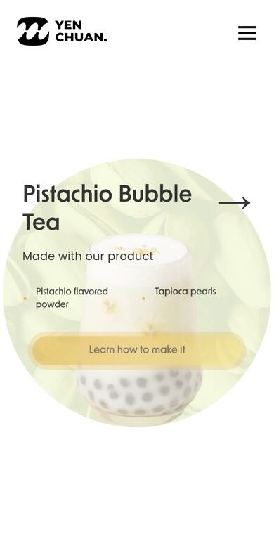
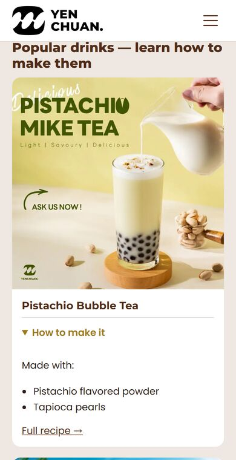
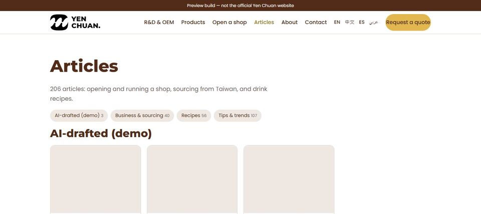
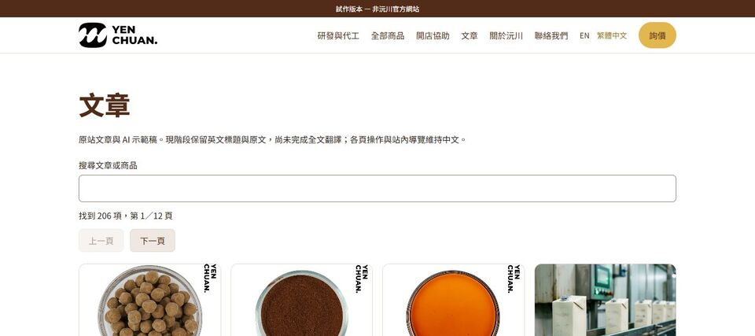
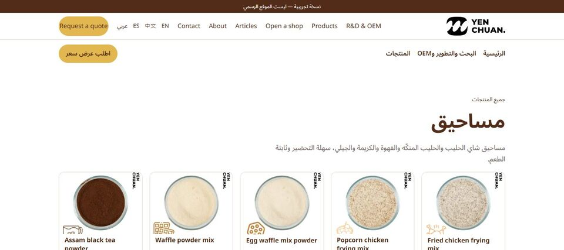
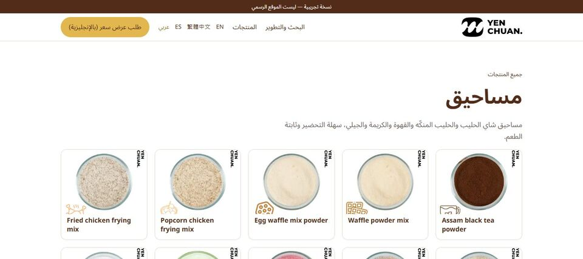
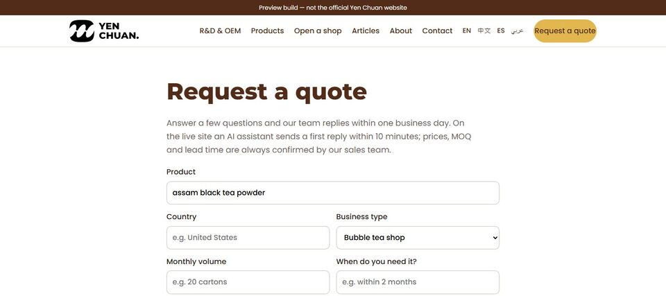
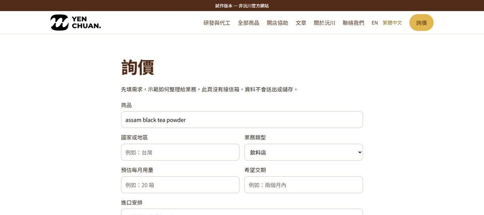

已做好的功能，下一步想怎麼做？
成效一覽（原網站 → 試作網站）
試作成果，正式站未更動；下載量為11/14紀錄。
| 項目 | 原網站 | 試作 | 狀態 |
|---|---|---|---|
| 網站內容整合 | 官網、文章、商城分開瀏覽 | 研發、商品、文章與詢價入口集中在同一試作網站 | 部分達成前端內容已整合；正式會員/訂單未接 |
| 手機做法 | 原查核畫面點了不展開 | 飲品卡點開用料，第一張可連到完整配方 | 已達成 |
| 首頁下載量 | 約2.6 MB／59檔 | 約0.1 MB／11檔 | 已達成 |
| 商品分類頁下載量 | 約1.7 MB／116檔 | 約0.9 MB／25檔 | 已達成 |
| 商品頁下載量 | 約1.4 MB／111檔 | 約0.8 MB／19檔 | 已達成 |
| 文章列表下載量 | 約0.3 MB／12檔 | 約0.13 MB／11檔 | 已達成 |
| 多語介面 | 英文介面 | 英、中、西、阿四語介面；部分商品/文章仍保留原文 | 部分達成試作可看，未全篇翻譯 |
| 文章查找 | 官網與商城分兩處 | 同一列表206篇，可搜尋與分頁，含示範稿 | 已達成 |
| 樣品付款流程 | 原頁以加入詢價為主 | 樣品到付款的流程畫面已備 | 部分達成僅畫面，未接真金流 |
改前／改後畫面
手機做法展開
從點了不展開，改成可展開用料與配方入口。
圖片取自先前查核/試作；目前連結是中文介面。改後不是正式官網已修改。


商品分類查找
文章搜尋與分頁
增加可搜尋與分頁的中文列表，較容易查文章。
這組比較的是兩版試作，不是原官網；部分內容為原文或待核示範稿。


中文導航
阿拉伯文排版
阿文商品卡改為依右到左的順序排列。
比較的是兩版試作；這是排版，不代表全部內容已完成翻譯或真人語言核稿。


詢價畫面
用表單欄位先整理國家、用量、交期等詢價內容。
兩圖都是試作。改前圖的十分鐘/AI回覆字樣是舊文案，不是本輪承諾；目前未接真AI/信箱/WhatsApp，不會實際寄信。


樣品付款流程
下一步
空白題略過。會另開Google確認頁，看到「需求已收到」才算完成；請勿填帳密、付款資料或客人個資。